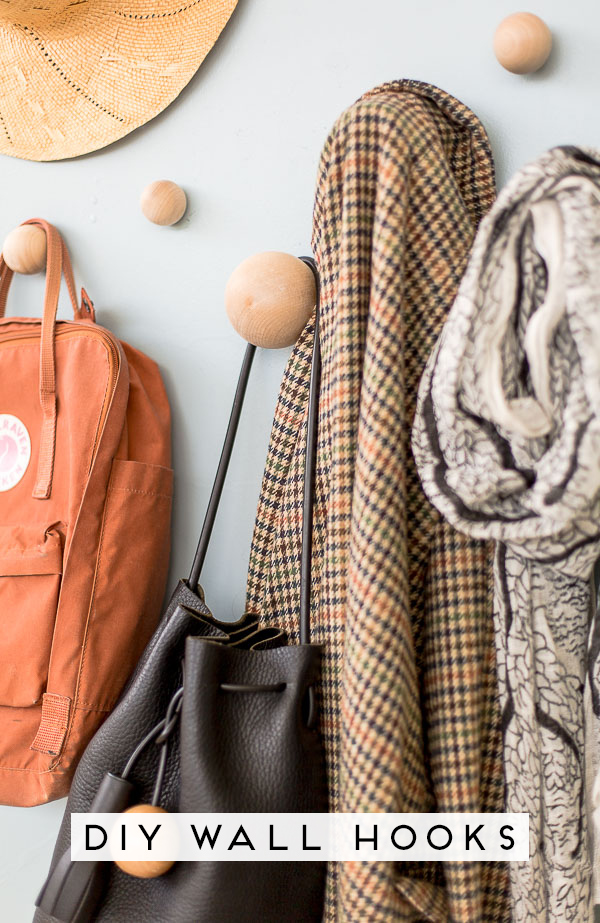

ORGANIZE YOUR ENTRYWAY WITH THESE DIY WALL HOOKS
JANUARY 3RD, 2018 | 14 COMMENTS

With the new year already here, I’ve been brainstorming ways to get organized for 2018. And after a quick trip to the craft store, I came up with a wall hooks idea to give my jackets, bags, scarves, etc a much-needed place to hang on the wall.
When these DIY wall hooks are not in use, they just look like cool geometric shapes, blending in with any decor as a wall art installation. But when you need ’em, they’re there – functioning as any other wall hook would. And they’re so easy to make with just a few supplies too! Click through for the tutorial.
FYI – I originally created this DIY project for Domino and am sharing it here, with permission.
What You’ll Need
With the new year already here, I’ve been brainstorming ways to get organized for 2018. And after a quick trip to the craft store, I came up with a wall hooks idea to give my jackets, bags, scarves, etc a much-needed place to hang on the wall.
When these DIY wall hooks are not in use, they just look like cool geometric shapes, blending in with any decor as a wall art installation. But when you need ’em, they’re there – functioning as any other wall hook would. And they’re so easy to make with just a few supplies too! Click through for the tutorial.
FYI – I originally created this DIY project for Domino and am sharing it here, with permission.
What You’ll Need
- double ended screws
- wood blocks various sizes and 2 or 3 inch diameter dowel rods
- pliers
- drill
- clamp vise
- (optional) acrylic paint and paint brush
- If using a large dowel rod for any wall hooks, start by placing rod into clamp vise and cutting 3-5 inch pieces of dowel rod with a saw or jigsaw. Then, sand edges if needed.
- Next, keeping the block in the clamp vise, drill a pilot hole in the center of each block (don’t go all the way through).
- Insert one end of the double ended screw into the hole and use a pair of pliers to screw in and secure. Stop at the halfway point.
- If you want to keep the wood raw they’re ready to hang (screw into the wall), but if you want to add some color, you can paint them with acrylic paint. I went with two-toned painted dowels, at first. But when hanging everything, I decided I liked the raw wood blocks best. So I used mainly the unpainted blocks in the entryway, in the end. Which is why I didn’t show the painting portion of the hooks in the steps. I think the wooden circle hooks are my favorite. They look like little bubbles on the wall.
Are you getting organized in the new year?! Could your entryway use a revamp with these DIY wall hooks?